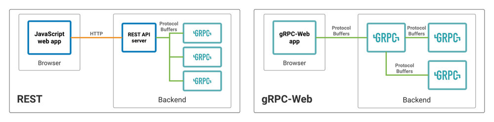
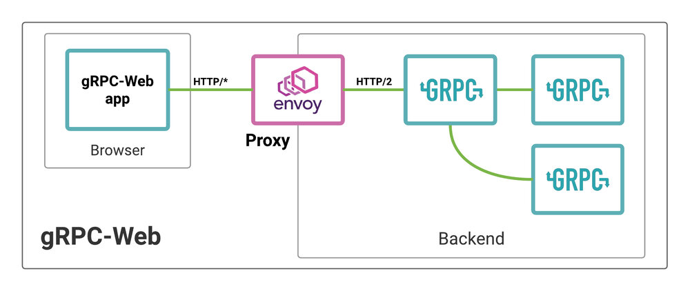

本文为翻译文章，点击查看原文。
gRPC-Web作为gRPC的JavaScript客户端库，使Web应用可以不用自定义HTTP服务器为中介，直接通过Envoy与gRPC服务交互。经过了约两年的活跃开发，上周（2018年10月底，译者注）gRPC团队在CNCF博客宣布gRPC-Web的GA版本正式发布。
自从在Improbable engineering blog读到了这篇博文，我个人就对gRPC-Web很感兴趣。之前一直很看好gRPC的性能、可拓展性和IDL（接口描述语言）驱动的服务交互方式，而且特别想在服务调用链中去掉REST部分。我很高兴gRPC-Web发布正式版本，它在 Web 开发领域开辟了新的方式。
我觉得gRPC-Web的优势就是自Web端向下构建了完整的端到端gRPC服务架构。在以前，如果你想让web端与gRPC服务交互，就必须自己开发REST接口处理HTTP和gRPC之间的转换。而使用gRPC-Web，我们不再需要自己写额外的HTTP接口，可以直接用Protocol Buffers封装所有数据接口（这里借用了Envoy，在下文我会详细解释）。
REST 方式
下图展示了基于gRPC服务架构构建Web App的两种方式。左边是传统的REST方式。右边是gRPC-Web方式。

左图所示，REST API只是作为Web App和后端gRPC服务的连接点。在大部分场景下，REST 服务就是简单的将HTTP调用转换成gRPC调用。
举个例子：客户端需要验证服务于是用POST请求提交 JSON数据到HTTP服务器的/auth。然后HTTP端把JSON数据转换成Protobuf消息 AuthRequest，并将消息发送给gRPC认证服务，最后从gRPC服务获取到 AuthResponse 响应并将其转换成JSON数据返回给前端。正如我在CNCF博客中文章中说的一样，这种方法本身并没有错，它是一种解决方案，而且很多开发者都用的很好，如果它能满足你，你可以继续这样用。
更好的方案：如果可以去掉HTTP中介我们会少做很多工作（试想一下，JavaScript 端直接发送AuthRequest消息给gRPC服务并获得 AuthResponse 响应）。这意味着我们不需要关心HTTP状态码、JSON解析和HTTP服务本身带来的部署和管理问题。
上图右半部分是使用gRPC-Web的替代方案。它的架构更加清晰，一个protocol贯穿整个gRPC服务调用的始终。不再有额外的HTTP逻辑，所有的数据接口都在 .proto 文件中定义。整个调用过程就是客户端向gRPC服务发送Protobuf消息并从服务获取Protobuf消息。
我们仅需要一个组件就能达到这种比较好的效果。
Envoy 所扮演的角色
这里必须承认，我之前讲gRPC-Web直接调用gRPC服务的这种说法不是完全正确的。使用gRPC-Web的客户端调用仍然需要转换成对于gRPC友好的调用。Envoy填补了这个角色。同时Envoy也是gRPC-Web内置的默认服务网关。
下图中展示了Envoy结合gRPC-Web使用。图中Web App调用了一个gRPC服务，该服务又依赖另外两个gRPC服务。Envoy 将 HTTP/1.1 请求转换成 HTTP/2 请求。底层其实还是需要进行HTTP协议的转换，但客户端和服务端都不需要考虑HTTP层的问题。

gRPC-Web明显优于REST，因为它只需开发者创建一个Envoy并做一些基础配置，而不需要自己创建转换层。
Envoy 示例配置
static_resources:
listeners:
- name: listener_0
address:
socket_address: { address: 0.0.0.0, port_value: 8080 }
filter_chains:
- filters:
- name: envoy.http_connection_manager
config:
codec_type: auto
stat_prefix: ingress_http
route_config:
name: local_route
virtual_hosts:
- name: local_service
domains: ["*"]
routes:
- match:
prefix: "/”
route:
cluster: auth_service
cors:
allow_origin:
- "*"
allow_methods: GET, PUT, DELETE, POST, OPTIONS
allow_headers: keep-alive,user-agent,cache-control,content-type,content-transfer-encoding,x-accept-content-transfer-encoding,x-accept-response-streaming,x-user-agent,x-grpc-web
max_age: "1728000"
expose_headers: grpc-status,grpc-message
enabled: true
http_filters:
- name: envoy.grpc_web
- name: envoy.cors
- name: envoy.router
clusters:
- name: auth_service
connect_timeout: 0.25s
type: logical_dns
http2_protocol_options: {}
lb_policy: round_robin
hosts:
socket_address:
address: auth-server
port_value: 9090
总的来讲它就是Envoy最基本的HTTP配置，只是有一点点区别：
- 一点 gRPC-Web 必须的自定义头部：
x-grpc-web，grpc-status和grpc-message（JavaScript 会自动处理它们） - 内置的
envoy.grpc_webHTTP过滤器用来完成繁杂的gRPC-Web代理工作 - 在
auth_service配置中指定http2_protocol_options: {}来获取HTTP/2的链接
你只需要写一点YAML配置就可以从额外的HTTP适配工作中解脱出来。你不用关心HTTP与gRPC的方法映射问题，也不用去StackOverflow找HTTP的哪个状态码对应gRPC的哪个状态码，更不需要将Proto消息包装成JSON。
新方式
gRPC-Web + Envoy为web开发提供了一种全新的方式，它能保证Protocol Buffers和gRPC的类型安全还规避了HTTP+REST中的很多常见问题。我推荐大家在自己的下一个项目中试试它。